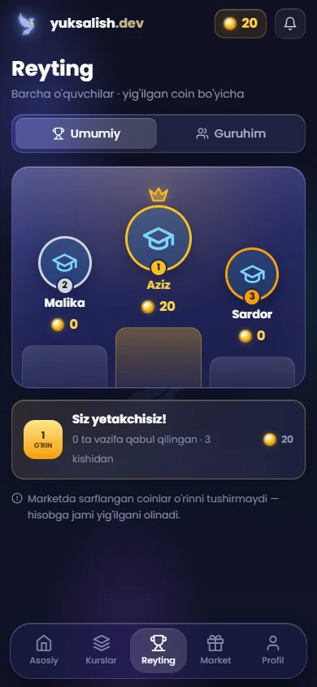

O'quvchi
O'qish o'yinga aylanadi: har bir qabul qilingan vazifa — coin, coinlar — darajalar va sovg'alar.
- Dars jadvali va keyingi dars eslatmasi
- Vazifani matn, fayl yoki havola bilan topshirish
- Dars videolari va o'qituvchi izohlari
- Coin, 10 ta daraja, nishonlar va market
- Umumiy va guruh reytingi

